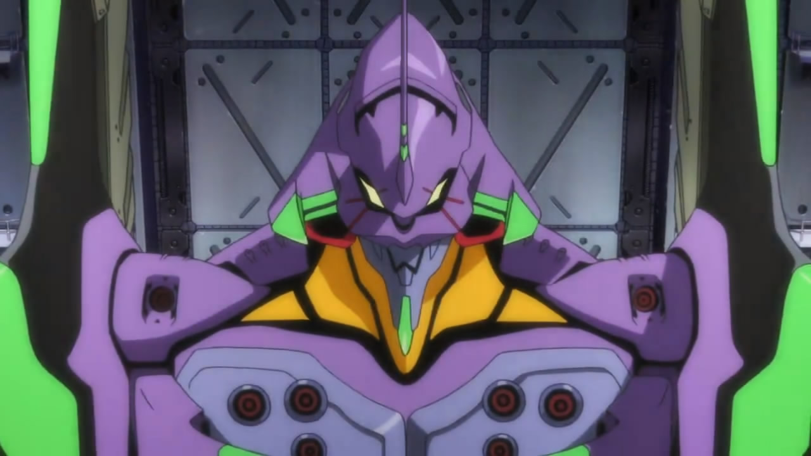
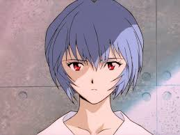
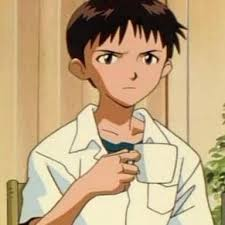
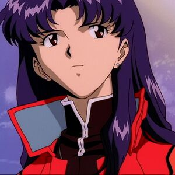
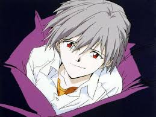
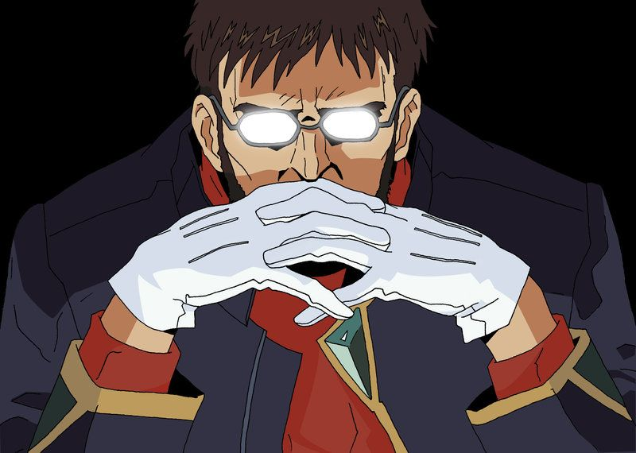

Eva(s)
Se tratan de seres organicós que comparten bastantes similitudes con los humanos, sus cuerpos  se esncuentran recubiertos por una armadura que suprime su voluntad y evita que se salgan de control estos pueden ser piloteados or humanos gracias a que poseen una apertura en la columna vertebral en donde se puede introducir al piloto lleno de LCL. A su vez, el piloto se encontrara en sincronia con el Eva mediante impulsos nerviosos. Por lo tanto podra moverlo a voluntad, pero también sentira lo mismo que el robot, es decir, si el Eva pierde un brazo el piloto sentira dolor equivalente a perder un brazo aunque en realidad no le este pasando nada a su cuerpo.
Ayanami Rei
Luego de la muerte de la esposa de Gendo Ikari, decidió hacer un clon de ella con el ADN de los restos  que quedaron y el alma de Lilith, de esa forma es que nace Rei 1 con el cuerpo de Yui y el alma de Lilith. Esta primera Rei era dificil de controlar, como si de una niña engreida se tratara. Para ese entonces, la Dra. Akagi, una cientifica muy importante de GEHIRN había estado frecuentando a Gendo, quien la aceptaba solo para llenar el vació que le habia dejado Yui. Un día de esos Rei se burló de la Dra. Akagi, lo que provocó que Akagi se enfurezca y termine ahorcando a la pequeña niña. Posteriormente la doctora se suicido, esto llevó a que Gendo creara a Rei 2, esto lo logro colocando solo la mitad del alma de Lilith dentro de Rei y la otra mitad dentro del Eva 00, de esta forma logró suprimir las emociones de Rei
Shinji Ikari
A los 3 años Shinji presencio la muerte de su madre, luego su padre lo abandonó y vivió 11 años con su  maestro, hasta que un día recibe una carta de su padre quien dice que lo necesita en NERV y que mandaria a su subordinada a recogerlo. Por obras del destino el mismo día en el que acordaron su encuentro aparece el Primer Ángel con intenciones de destruir todo. Shinji es salvado por la subordinaria de su padre, Misato Katruragi, la misma niña que sobrevivio al segundo impacto, ambos llegan a NERV y Shinji vuelve a ver a su papá quien le dice que se suba al robot. Shinji se niega pero se da cuenta que si no lo hace se subira Rei quien esta muy herida. Finalmente decide subirse para cmenzar a pelear contra los ángeles.
Asuka Langley
Asuka es la segunda piloto del Eva 02. Cuando Asuka tenia 4 años su madre participo en un experimento
 para pilotar el Eva 02, aunque sobrevivio físicamente comenzó a referirse a una muñeca como su "verdadera hija", dejando de lado
a Asuka. Años despues su madre se suicida, dejando una gran cicatriz en su corazón, luego de estos acontecimientos Asuka se negó
a llorar y declaró que desde ahora en adelante tendría que cuidarse ella sola. Tiempo después, su padre se volvió a casar y la actitud
defensiva de Asuka rápidamente repelió a su nueva madrastra. Con el tiempo, las dos aprendieron a tolerarse entre sí, manteniendo
una fachada alegre de una familia normal.
para pilotar el Eva 02, aunque sobrevivio físicamente comenzó a referirse a una muñeca como su "verdadera hija", dejando de lado
a Asuka. Años despues su madre se suicida, dejando una gran cicatriz en su corazón, luego de estos acontecimientos Asuka se negó
a llorar y declaró que desde ahora en adelante tendría que cuidarse ella sola. Tiempo después, su padre se volvió a casar y la actitud
defensiva de Asuka rápidamente repelió a su nueva madrastra. Con el tiempo, las dos aprendieron a tolerarse entre sí, manteniendo
una fachada alegre de una familia normal.
Misato Katsuragi
Misato Katsuragi está al mando de las operaciones tácticas en la organización NERV, siendo responsable de  coordinar las Unidades Evas en combate contra los ángeles, ocupando el cargo de capitán. Misato es la unica sobreviviente del Segundo Impacto. Fue salvada por su padre, quien la metió en una capsula para salvarla del incidente. Debido a esto, quedó traumatizada y durante años padeció de afasia.Tras superar sus traumas genero un fuerte deseo de vengar a su padre y de destruir a los Ángeles. Misato está capacitada para asumir el mando durante la ausencia del comandante Gendo Ikari, y ha demostrado su capacidad para tomar decisiones correctas bajo situaciones extremas. Su espontaneidad y genio estratégico es evidente durante los ataques de los ángeles.
Kowaru Nagisa
Kowaru es el quinto niño enviado a NERV por SEELE como piloto de reemplazo del Eva 02. Además de ser el  quinto niño también es el decimoséptimo ángel. A pesar de la brevedad del tiempo que pasan juntos, los dos jóvenes se sienten atraídos el uno al otro y construyen una relación profunda y sincera de amor. Kaworu es la primera persona en decirle a Shinji que le quería, así como también la primera y última a quien este abrió su corazón, incluso afirmando a Misato que Kaworu dijo que me amaba. Yo lo amé también. Después de su muerte, Shinji cae en un profundo estado de depresión y se encierra de nuevo en sí mismo. Poco antes de su muerte, Kaworu mantiene sin cambios su propio sentimiento de amor por Shinji, dando gracias de que pudo encontrarse con él.
Gendo Ikari
Gendo es el Comandante de NERV, también es el papá de Shinji y el creador de las Unidades Evas,  así como el fundador del proyecto de la Complementación Humana. Se muesta como alguien precavido y controlador, rara vez empieza a mostrar sus sentimientos y que tiende a considerar a las personas como herramientas. Según otros personajes, posee cierto parecido emocional con Shinji, y está tan distanciado de su hijo como su hijo de él. Aunque Gendo pretende seguir las órdenes de SEELE, sin duda tiene su propia agenda y trata de manipular al comité. Su rebelión abierta a SEELE viene de su deseo de iniciar el Tercer Impacto bajo su completo control. Se implanta el embrión de Adán en la mano para lograr fusionarse con Rei.
Ryoji Kaji
Ryoji Kaji es un triple agente, que trabaja como inspector especial para NERV, pero secretamente
 realiza una investigación detallada sobre la organización, cumpliendo la peligrosa tarea de espía encubierto. Vivió una relación
amorosa con Misato Katsuragi que empezó cuando aun estaban en la universidad. Ryoji muere de un disparo realizandó una misión para
SEELE, la identidad de su asesino es todavia un misterio.
realiza una investigación detallada sobre la organización, cumpliendo la peligrosa tarea de espía encubierto. Vivió una relación
amorosa con Misato Katsuragi que empezó cuando aun estaban en la universidad. Ryoji muere de un disparo realizandó una misión para
SEELE, la identidad de su asesino es todavia un misterio.